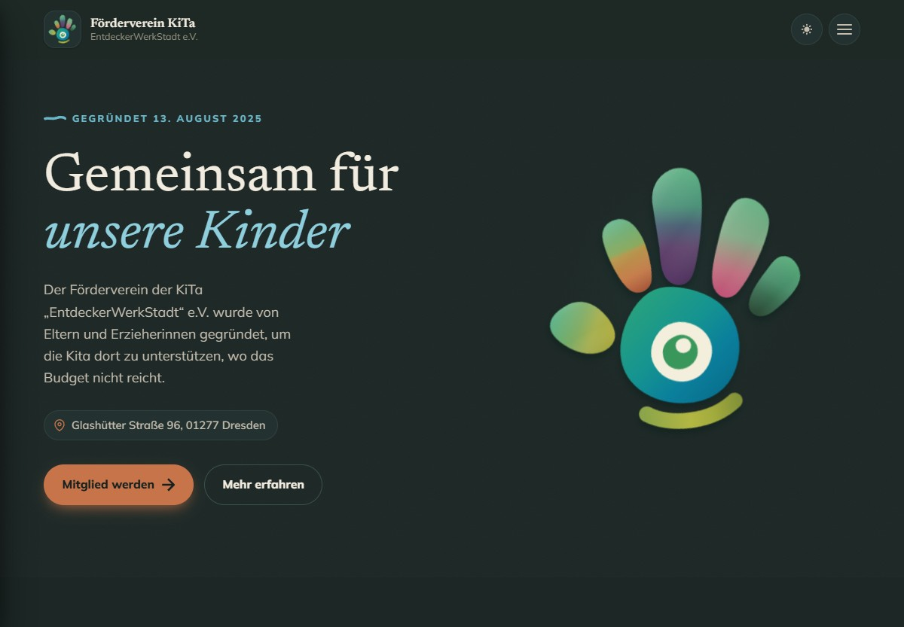
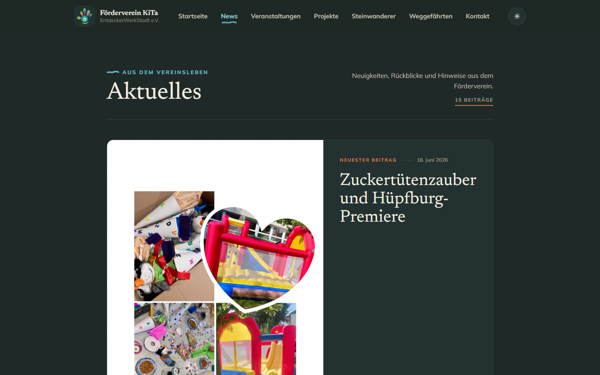
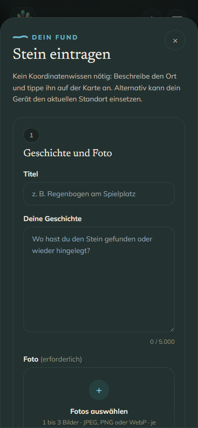

01 / public
Website
German and English pages for news, events, projects, contact and Steinwanderer.
STROHUT WORK
2026 · website & editor
The Förderverein needed a public site it could keep current without calling a developer for every change.
I built the bilingual pages, protected editor and Steinwanderer review flow that let the team publish and moderate its own content.
public website 13 Aug 2026

01 / public
German and English pages for news, events, projects, contact and Steinwanderer.
02 / private
The team writes pages and reviews map submissions behind sign-in.
03 / system
Next.js and TypeScript, with the same safe rich-text renderer in the editor and on public pages.


Steinwanderer / moderation
Visitors add a travelling stone to the Saxony map with its story, location and up to three photos. The submission stays private until the team approves it.
01
Title, story, location and one to three photos arrive with consent and image rights confirmed.
02
Every submission starts pending. Its images stay unavailable to anonymous visitors and private in the editor.
03
The protected dashboard brings the gallery, submitted location and a visual map check together for approval or rejection.
04
Only approved stones and images reach the public map and stories. Approval and rejection are recorded in the moderation history.
nothing public before approval Once approved, the story and its photos appear on the map.
in progress
active WIP
A mobile-first fishing PWA. I have built the Harbor shell, catch flow and loadout; the full fishing loop and final visual pass are still unfinished.
under revision
My local control plane, with Proxima as its second brain. Project views, monitoring and a knowledge map exist; Proxima's retrieval and the surrounding interface are still being rebuilt.